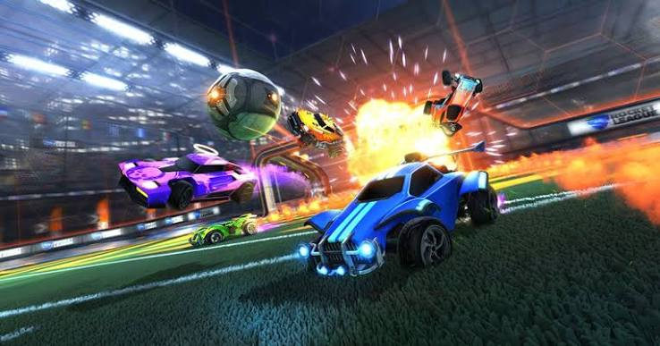
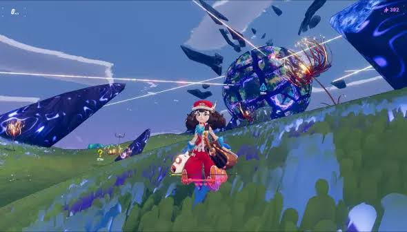

Entre la montée en compétence sur des jeux compétitifs et l'envie de vivre une histoire en solo, j'aime les deux facettes du jeu vidéo : progresser face aux autres, et me poser devant un bon univers.

C'est le jeu auquel je reviens le plus souvent. Il est assez complexe à maîtriser, et c'est justement ce qui me plaît : apprendre de nouvelles mécaniques, affiner mes réflexes et voir concrètement mon évolution par rapport aux autres joueurs au fil des saisons.

À côté de la compétition, j'aime aussi les jeux plus posés qui nécessite tout de meme de la reactivité car c'est un jeu rapide, avec une histoire qui donne envie d'avancer — comme Haste. C'est un bon contraste avec l'aspect compétitif de Rocket League : deux façons différentes de me poser devant un jeu.
« Un bon jeu, c'est soit une progression qui n'a pas de fin, soit une histoire qu'on n'oublie pas. » — Brayan Campion